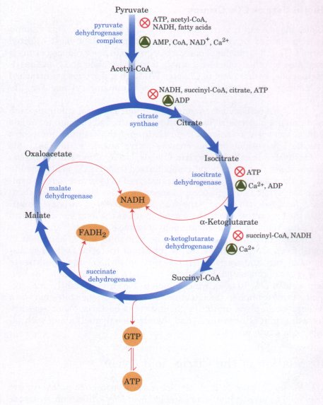
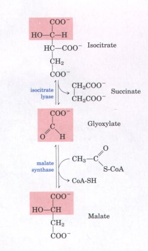
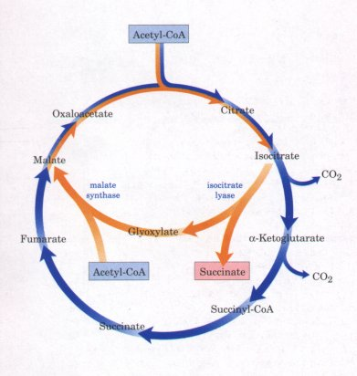
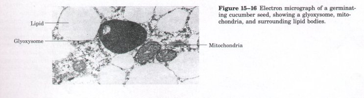
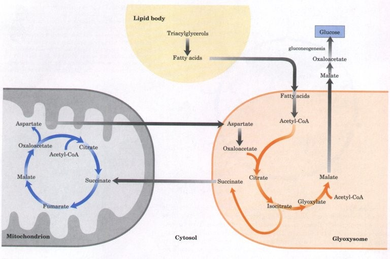
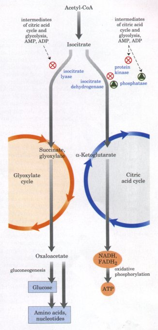

We saw in Chapter 14 that key enzymes in metabolic pathways are regulated by allosteric effectors and by covalent modification, to assure production of intermediates and products at the rates required to keep the cell in a stable steady state and to avoid wasteful overproduction of intermediates. The flow of carbon atoms from pyruvate into and through the citric acid cycle is under tight regulation at two levels: the conversion of pyruvate into acetyl-CoA, the starting material for the cycle (the pyruvate dehydrogenase complex reaction), and the entry of acetyl-CoA into the cycle (the citrate synthase reaction). Because pyruvate is not the sole source of acetyl-CoA (most cells can obtain acetylCoA by the oxidation of fatty acids and certain amino acids), the availability of intermediates from these other pathways is also important in the regulation of pyruvate oxidation and of the citric acid cycle. The cycle is also regulated at the isocitrate dehydrogenase and α-ketoglutarate dehydrogenase reactions.
The pyruvate dehydrogenase complex of vertebrates is regulated both allosterically and by covalent modification. The complex is strongly inhibited by ATP, as well as by acetyl-CoA and NADH, the products of the reaction (Fig. 15-14). The allosteric inhibition of pyruvate oxidation is greatly enhanced when long-chain fatty acids are available. AMP, CoA, and NAD+, all of which accumulate when too little acetate flows into the citric acid cycle, allosterically activate the pyruvate dehydrogenase complex. Thus this enzyme activity is turned off when ample fuel is available in the form of fatty acids and acetyl-CoA and when the cell's ATP concentration and [NADH]/[NAD+] ratio are high, and turned on when energy demands are high and greater flux of acetyl-CoA into the citric acid cycle is required.
 |
Figure 15-14 Regulation of metabolite flow from pyruvate through the citric acid cycle. The pyruvate dehydrogenase complex is allosterically inhibited at high [ATP]/[ADP], [NADH]/[NAD+], and [acetylCoA]/(CoA] ratios, all of which indicate the energysufficient metabolic state. When these ratios decrease, allosteric activation of pyruvate oxidation results. The rate of flow through the citric acid cycle can be limited by the availability of the substrates oxaloacetate and acetyl-CoA or by the depletion of NAD+ by its conversion to NADH, which slows the three oxidation steps for which NAD+ is the cofactor. Feedback inhibition by succinyl-CoA, citrate, and ATP also slows the cycle by inhibiting early steps. In muscle tissue, Ca2+ signals contraction and stimulates energy-yielding metabolism to replace the ATP consumed by contraction. |
In the pyruvate dehydrogenase complex of vertebrates, these allosteric regulation mechanisms are complemented by a second level of regulation, covalent protein modification. The enzyme complex is inhibited by the reversible phosphorylation of a specific Ser residue on one of the two 6subunits of E1. As noted earlier, in addition to the enzymes E1, E2, and E3, the pyruvate dehydrogenase complex contains two regulatory proteins, the sole purpose of which is to regulate the activity of the complex. A specific protein kinase phosphorylates and thereby inactivates E1, and a specific phosphoprotein phosphatase removes the phosphate group by hydrolysis, thereby activating E1. The kinase is allosterically activated by ATP: when ATP levels are high (reflecting a sufficient supply of energy), the pyruvate dehydrogenase complex is inactivated by phosphorylation of E1. When the ATP level declines, kinase activity decreases and phosphatase action removes the phosphates from E1, activating the complex.
The pyruvate dehydrogenase complex of plants, which is found in the mitochondrial matrix and within plastids (p. 39), is strongly inhibited by NADH, which may be its primary regulator. There is also evidence for inactivation of the plant mitochondrial enzyme by reversible phosphorylation. The pyruvate dehydrogenase complex of E. coli is under allosteric regulation similar to that of the vertebrate enzyme, but the regulation by phosphorylation apparently does not occur with the bacterial enzyme.
The flow of metabolites through the citric acid cycle is under stringent, but not complex, regulation. Three factors govern the rate of flux through the cycle: substrate availability, inhibition by accumulating products, and allosteric feedback inhibition of early enzymes by later intermediates in the cycle.
There are three strongly exergonic steps in the cycle, those catalyzed by citrate synthase, isocitrate dehydrogenase, and α-ketoglutarate dehydrogenase (Fig. 15-14). Each can become the ratelimiting step under some circumstances. The availability of the substrates for citrate synthase (acetyl-CoA and oxaloacetate) varies with the metabolic circumstances and sometimes limits the rate of citrate formation. NADH, a product of the oxidation of isocitrate and α-ketoglutarate, accumulates under some conditions, and when the [NADH]/[NAD+] ratio becomes large, both dehydrogenase reactions are severely inhibited by mass action. Similarly, the malate dehydrogenase reaction is essentially at equilibrium in the cell (i.e., it is substrate limited; see Fig. 14-16), and when [NADH]/[NAD+] is large, the concentration of oxaloacetate is low, slowing the first step in the cycle. Product accumulation inhibits all three of the limiting steps of the cycle: succinyl-CoA inhibits α-ketoglutarate dehydrogenase (and also citrate synthase); citrate blocks citrate synthase; and the end product, ATP, inhibits both citrate synthase and isocitrate dehydrogenase (Fig. 15-14). The inhibition of citrate synthase by ATP is relieved by ADP, an allosteric activator of this enzyme. Calcium ions, which in vertebrate muscle are the signal for contraction and the concomitant increased demand for ATP, activate both isocitrate dehydrogenase and α-ketoglutarate dehydrogenase, as well as the pyruvate dehydrogenase complex. In short, the concentrations of substrates and intermediates of the citric acid cycle set the flux through this pathway at a rate that provides optimal concentrations of ATP and NADH.
Under normal conditions the rates of glycolysis and of the citric acid cycle are integrated so that only as much glucose is metabolized to pyruvate as is needed to supply the citric acid cycle with its fuel, the acetyl groups of acetyl-CoA. Pyruvate, lactate, and acetyl-CoA are normally maintained at steady-state concentrations. The rate of glycolysis is matched to the rate of the citric acid cycle not only by its inhibition by high levels of ATP and NADH, which are common components of both the glycolytic and respiratory stages of glucose oxidation, but also by the concentration of citrate. Citrate, the product of the first step of the citric acid cycle, serves as an important allosteric inhibitor of the phosphorylation of fructose-6-phosphate by phosphofructokinase-1 in the glycolytic pathway (p. 434).
The conversion of phosphoenolpyruvate to pyruvate (p. 413) and of pyruvate to acetyl-CoA (Fig. 15-2) are so exergonic as to be essentially irreversible. If a cell cannot convert acetate into phosphoenolpyruvate, acetate cannot serve as the starting material for the gluconeogenic pathway that leads from phosphoenolpyruvate to glucose (Chapter 19). Without this capacity, a cell or organism is unable to convert fuels that are degraded to acetate (fatty acids and certain amino acids) into carbohydrates.
As we saw in our discussion of anaplerotic reactions (Table 15-3), phosphoenolpyruvate can be synthesized from oxaloacetate in the reversible reaction catalyzed by PEP carboxykinase:
Oxaloacetate + GTP  phosphoenolpyruvate + CO2 +
GDP
phosphoenolpyruvate + CO2 +
GDP
In Chapter 19 we will see how phosphoenolpyruvate is converted to glucose by the gluconeogenic pathway.
Because carbon atoms from acetate molecules that enter the citric acid cycle appear eight steps later in oxaloacetate, it might appear that operation of the citric acid cycle could generate oxaloacetate from acetate, and thus generate phosphoenolpyruvate for gluconeogenesis. However, examination of the stoichiometry of the cycle reveals that there is no net conversion of acetate into oxaloacetate via the cycle; for every two carbons that enter the cycle as acetyl-CoA, two leave as CO2.
In plants, in certain invertebrates, and in some microorganisms such as E. coli and yeast, acetate can serve both as an energy-rich fuel and as a source of phosphoenolpyruvate for carbohydrate synthesis. These organisms have a pathway, the glyoxylate cycle, that allows the net conversion of acetate to oxaloacetate. In these organisms, some enzymes of the citric acid cycle operate in two modes: (1) they can function in the citric acid cycle for the oxidation of acetyl-CoA to CO2, as it occurs in most tissues, and (2) they can operate as part of a specialized modification, the glyoxylate cycle (Fig. 15-15). The glyoxylate cycle may have evolved before, and given rise to, the citric acid cycle. The overall reaction equation of the glyoxylate cycle, which may also be regarded as an anaplerotic pathway, is
2 Acetyl-CoA + NAD+ + 2H2O  succinate + 2CoA +
NADH + H+
succinate + 2CoA +
NADH + H+
| In the glyoxylate cycle, acetyl-CoA condenses with oxaloacetate to form citrate exactly as in the citric acid cycle. The breakdown of isocitrate does not occur via the isocitrate dehydrogenase reaction, however, but through a cleavage catalyzed by the enzyme isocitrate lyase, to form succinate and glyoxylate. The glyoxylate then condenses with acetylCoA to yield malate in a reaction catalyzed by malate synthase. The malate is subsequently oxidized to oxaloacetate, which can condense with another molecule of acetyl-CoA to start another turn of the cycle (Fig. 15-15). In each turn of the glyoxylate cycle, two molecules of acetyl-CoA enter and there is a net synthesis of one molecule of succinate, available for biosynthetic purposes. The succinate may be converted through fumarate and malate into oxaloacetate, which can then be converted into phosphoenolpyruvate by the PEP carboxykinase reaction described above. Phosphoenolpyruvate can then serve as a precursor of glucose in gluconeogenesis. |  |
| In plants, the enzymes of the glyoxylate
cycle are sequestered in membrane-bounded organelles
called glyoxysomes (Fig. 15-16); those enzymes common to
the citric acid and glyoxylate cycles have two isozymes,
one speciiic to mitochondria, the other to glyoxysomes.
Glyoxysomes are not present in all plant tissues at all
times. They develop in lipid-rich seeds during
germination, before the developing plants acquire the
ability to make glucose by photosynthesis. In addition to
glyoxylate cycle enzymes, glyoxysomes also contain all of
the enzymes needed for the degradation of fatty acids
stored in seed oils (Chapter 16). Acetyl-CoA formed from
lipids is converted into malate via the glyoxylate cycle,
and the malate serves as a source of oxaloacetate
(through the malate dehydrogenase reaction) for
gluconeogenesis. Germinating plants are therefore able to
convert the carbon of seed lipids into glucose. Vertebrate animals do not have the enzymes specific to the glyoxylate cycle (isocitrate lyase and malate synthase) and therefore cannot bring about the net synthesis of glucose from lipids. |
 Fignre 15-15 The glyoxylate cycle and its relationship to the citric acid cycle. The orange reaction arrows represent the glyoxylate cycle, and the blue arrows, the citric acid cycle. Notice that the glyoxylate cycle bypasses the two decarboxylation steps of the citric acid cycle, and that two molecules of acetyl-CoA enter the glyoxylate cycle during each turn, but only one enters the citric acid cycle. The glyoxylate cycle was elucidated by Hans Kornberg and Neil Madsen in the laboratory of Hans Krebs. |


Figure 15-17 The reactions of the glyoxylate cycle (in glyoxysomes) proceed simultaneously with, and mesh with, those of the citric acid cycle (in mitochondria), as intermediates pass through the cytosol between these compartments. The reactions involved in the oxidation of fatty acids to acetyl-CoA and the conversion of oxaloacetate to aspartate will be discussed in Chapters 16 and 21, respectively.
In germinating plant seeds, the enzymatic transformations of dicarboxylic and tricarboxylic acids occur in three intracellular compartments: mitochondria, glyoxysomes, and the cytosol. There is a continuous interchange of intermediates among these compartments (Fig. 15-17).
Aspartate carries the carbon skeleton of oxaloacetate from the citric acid cycle (in mitochondria) to the glyoxysome, where it condenses with acetyl-CoA derived from fatty acid breakdown. The citrate thus formed is converted to isocitrate by aconitase, then split into glyoxylate and succinate by isocitrate lyase. The succinate returns to the mitochondrion, where it reenters the citric acid cycle and is transformed into oxaloacetate, which can again be exported (via aspartate) to the glyoxysome. The glyoxylate formed within the glyoxysome combines with acetyl-CoA to yield malate, which enters the cytosol and is oxidized (by cytosolic malate dehydrogenase) to oxaloacetate, the precursor of glucose via gluconeogenesis. Four distinct pathways participate in these conversions: fatty acid breakdown to acetyl-CoA (in glyoxysomes), the glyoxylate cycle (in glyoxysomes), the citric acid cycle (in mitochondria), and gluconeogenesis (in the cytosol).
The sharing of common intermediates requires that these pathways be regulated and coordinated. Isocitrate is a crucial intermediate, standing at the branch point between the glyoxylate and citric acid cycles (Fig. 15-18). Isocitrate dehydrogenase is regulated by covalent modification: a specific protein kinase phosphorylates and thereby inactivates the dehydrogenase. Inactivation of isocitrate dehydrogenase shunts isocitrate to the glyoxylate cycle, where it begins the synthetic route toward glucose. A phosphoprotein phosphatase removes the phosphate group from isocitrate dehydrogenase, reactivating the enzyme and sending more isocitrate through the energy-yielding citric acid cycle. The regulatory protein kinase and phosphoprotein phosphatase are separate enzymatic activities, but both reside in the same polypeptide.
Some bacteria, including E. coli, have the full complement of enzymes for the glyoxylate and citric acid cycles in the cytosol. E. coli can therefore grow with acetate as its sole source of carbon and energy. The phosphatase activity that causes activation of isocitrate dehydrogenase is stimulated by intermediates of the citric acid cycle and of glycolysis, and by indicators of reduced cellular energy supply (Table 15-4; Fig. 15-18). The same metabolites inhibit the protein kinase activity of the bifunctional enzyme. Thus, the accumulation of intermediates of the central energy-yielding pathways, or energy depletion, results in the activation of isocitrate dehydrogenase. When the concentration of these regulators falls, signaling enough flux through the energy-yielding citric acid cycle, isocitrate dehydrogenase is inactivated by the protein kinase.
All compounds shown inhibit the kinase activity. Compounds with * stimulute the phosphatase activity. The overall result is activation of isocitrate dehydrogenase and thus of the citric acid cycle. The same intermediates of the glycolytic and citric acid cycles that lead to activation of isocitrate dehydrogenase are allosteric inhibitors of isocitrate lyase. When energy-yielding metabolism is sufficiently fast to keep the concentrations of intermediates of glycolysis and the citric acid cycle low, isocitrate dehydrogenase is inactivated, the inhibition of isocitrate lyase is relieved, and isocitrate flows into the glyoxylate pathway, where it is used in the biosynthesis of carbohydrates, amino acids, and other cellular components. |
 Figure 15-18 Regulation of isocitrate dehydrogenase activity determines the partitioning of isocitrate between the glyoxylate cycle and the citric acid cycle. When isocitrate dehydrogenase is inactivated by phosphorylation (by a specific protein kinase), isocitrate is directed into biosynthetic reactions via the glyoxylate cycle; when the enzyme is activated by dephosphorylation (by a specific phosphatase), isocitrate enters the citric acid cycle, and ATP production results. |
||||||||||||||||||